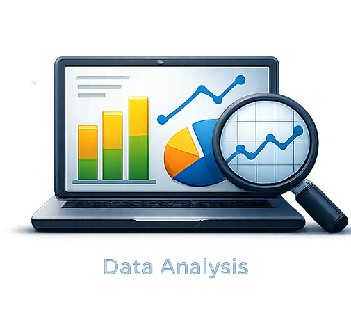
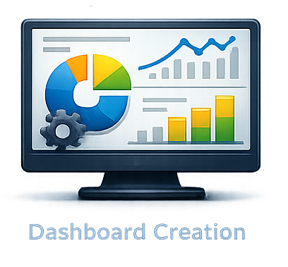

مرحباً، أنا عبد الله حسام
أنا
محلل بيانات ذكاء الأعمال
أقوم بتحويل البيانات الخام إلى رؤى واضحة ولوحات تحكم وتقارير جاهزة لاتخاذ القرارات.

أقوم بتحويل البيانات الخام إلى رؤى واضحة ولوحات تحكم وتقارير جاهزة لاتخاذ القرارات.
لقد كنت شغوفاً بتحليل البيانات منذ سن مبكرة، ودائماً ما كان لدي فضول بشأن الأنماط والأرقام. نما هذا الشغف بشكل أقوى في الجامعة، حيث درست نظم المعلومات وعملت مع مجموعات بيانات حقيقية. اليوم، أقوم بتحويل البيانات الخام إلى رؤى واضحة ولوحات تحكم وتقارير تدعم اتخاذ قرارات أفضل.
مبادرة رواد مصر الرقمية (DEPI) | 2026
أكاديمية القاهرة الجديدة | 2024
Pandas، NumPy (تنظيف وتحليل)، أساسيات Matplotlib.
Power Query، Pivot Tables، لوحات التحكم، الصيغ المتقدمة.
Joins، CTEs، views، aggregations، basic window functions.
نمذجة البيانات، مقاييس DAX، Power Query (ETL)، لوحات التحكم التفاعلية.
إصلاح القيم المفقودة/المكررة وتوحيد التنسيقات لجعل بياناتك موثوقة للتحليل.

استكشاف الأنماط والاتجاهات ومؤشرات الأداء الرئيسية للإجابة على أسئلة الأعمال الرئيسية بالأدلة.

إنشاء لوحات تحكم تفاعلية في Power BI مع أدوات التقطيع ومؤشرات الأداء الرئيسية لاتخاذ قرارات سريعة.
تقديم إجابات مباشرة وتقرير موجز يشرح الرؤى والتوصيات.


التحدي: تحسين ربحية سلسلة التوريد العالمية والخدمات اللوجستية عن طريق تحويل أكثر من 65 ألف سجل إلى رؤى استراتيجية واضحة ومباشرة.
الأدوات: Power BI (Star Schema, DAX)، SQL
الأثر: تم تحليل إيرادات بقيمة 36.8 مليون دولار بهامش ربح 10.8%، وتحديد فجوة كفاءة شحن مدتها 0.6 يوم.